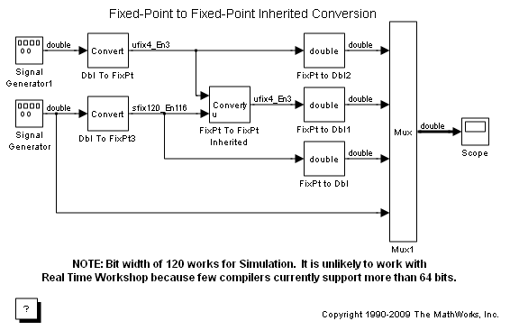
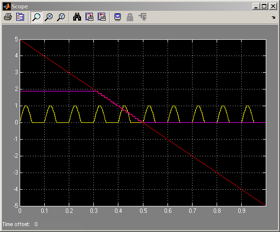

Fixed-Point to Fixed-Point Inherited Conversion
Because of Simulink® ability to propagate data types throughout a block diagram, fixed-point utility modeling can be templatized for multiple use scenarios. The data type inheritance capability can be given additional information through the use of various relative-type specifications. The FixPt To FixPt Inherited block provides a way to specify that "this signal should have the same fixed-point data type as that signal" by wiring it up to the signals of interest.
 